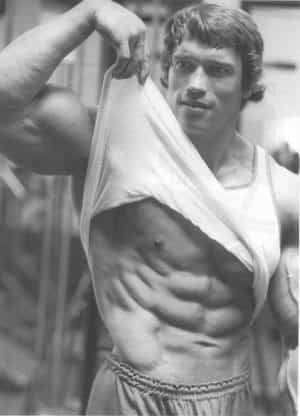

Sponsored Article is ROK's official account that publishes sponsored articles from advertisers. If you are interested hiring a sponsored article for your site, product, or service, visit our advertising page.


The following article was sponsored by Henry Tran.
*Editor’s Note: Henry teamed up with Return Of Kings to give you a huge discount at the six pack shop. Use your custom code: kings20 HERE for 20% off your entire order.
Hey guys,
My name is Henry, and I’m one of the head trainers at the #1 Fitness Channel on YouTube.
No matter where you come from, there seems to be a universally set standard for attraction and respect: A ripped physique, complete with six pack abs.
Now, I’m not saying that every guy with a six pack is respectable, nor is every respectable guy fit enough to have a six pack… But let’s be honest…
Typically, our first impression of a man with a six pack is that he is an Alpha male; a hard worker, and women are naturally more likely to flock to him with girlish excitement and deep sexual desire.
Moreover, having a trim, ripped waist makes the rest of your body look bigger – especially the shoulders – which is yet another masculine trait that separates us from women and beta males.
Now, I realize we’ve gotten to a day and age where having this physique SEEMS extremely tough – a lot men work obscene hours, are conditioned to unhealthy diets, and don’t get enough physical activity…
These men often look disdainfully upon a guy with abs because they assume that guy is a meat head, and all he does is work out, or he probably takes steroids. But truthfully, most guys have just been mislead to believe all the wrong things about getting abs… And that’s what I’m here to tell you.

You don’t actually need to exercise 24/7, starve yourself, or do 100 crunches a day to get six pack abs. In fact… I’m here to tell you that you need to do the exact opposite.
Check out these crucial mistakes you need to avoid so that you can actually get six pack abs faster…. no matter what your current lifestyle is like.
● Thinking crunches alone will get you abs: This train of thought is pervasive in beginners – and even many athletes who haven’t had formal training. I myself thought it would work in high school and even college. Guess what? It didn’t. You have to lower your body fat levels enough to see your abdominals – and then you can do crunches and other ab exercises to help define and increase the size of the muscles… which brings me to my next point….
● Relying on cardio to lose belly fat: This idea has invaded people’s minds. We see a lot of very fit professional runners, swimmers, and cyclists… But really, cardio is great for one thing: Your cardiovascular system. Your heart, lungs, and arteries will all benefit from cardio…. But your body fat and muscle mass likely won’t. In fact, there are ample studies to suggest that long, steady cardio is almost completely ineffective in reducing body fat.
● Thinking you need an infomercial gadget or special device to get abs: You’ve seen it. Maybe you’ve even bought into it. I wouldn’t judge you if you did… However, the weird ab gadgets that are sold on late night infomercials usually aren’t much more effective for getting you six pack abs than just crunches… And glorified plastic wraps or new-age corsets are also not going to trim your waistline and remove body fat.

“Well then… what WILL help me get abs, if not cardio, crunches, or a “get ripped” gadget that I bought from an Instagram Fitspo?”
It’s honestly pretty simple…
1. Start losing your belly fat with a basic, healthier way of eating.
○ Avoid restrictive, low calorie diets that make you feel hungry all the time, and eat 4-5 meals per day.
○ Eat carbohydrates ONLY from whole grain sources (quinoa, oatmeal, brown rice, etc), and only eat them in the morning and around your workout.
○ Instead of avoiding low-fat products, eat MORE healthy, high fat products like nuts, avocados, and yogurt….and add more protein into your diet.
○ The switch to more fats and fewer carbohydrates will turn your body into a fat burning machine!
2. Accelerate your fat loss with simple, high intensity, full body workouts.
○ Forget bicep curls and hours on the treadmill. Do movements that involve more and bigger muscle groups like squats or deadlifts.
○ Take shorter rest periods and combine them with a high intensity movement like burpees or high-knees in between sets.
○ No more steady state cardio – These workouts should take you 20 minutes MAX. Push harder for less time, which yields far superior results.
3. Add in a basic ab workout to make your abs more defined once you have a flat stomach
○ Hanging leg raises – Hang from a bar, and simply bring your knees as close to your chest as possible. Once you’re good at this, take your toes all the way to the bar with legs out straight.
○ Plank exercises – Play around with different plank variations like plank side dips, alternating knee-to-elbow, or side planks to hit all areas of your abdominals.
○ Add weight to continue getting better results: Try doing leg raises with a dumbbell between your feet, planks with a weight plate on your back, or kneeling cable crunches.
I know what you’re thinking… “Wow Henry, you must really be a genius to come up with these steps – as if nobody has ever said this before!”??
Well, yeah, it’s surprisingly basic. We, as a society, have over-complicated this whole “how to get six pack abs” thing. You’ve had crazy lies spun all around your head to convince you that you need very specific (maybe even weird) things to lose body fat and see your abs. I’m talking about bizarre ingredients in powdered shakes, vibrating bands that you wrap around your waist, and some wrap that sends electrical impulses through your abdomen to supposedly make your muscles contract and get you abs…?
If you want research-proven, high quality products that can help you reach your fitness goals, then you need to check out what actually works.
You’ll see exercise programs just like I mentioned – Full body, high-intensity resistance training, which will allow you to build muscle and drop body fat simultaneously.
…Nutrition programs that aren’t restrictive, that teach you how to eat healthy portions, prepare an entire week’s worth of meals in less than an hour, and give you all other necessary guidelines to eat for a six pack.
…Supplements formulated only the with top-tier, research-backed ingredients and full transparency of those ingredients, with the research right there on the page so you can double check this proven data for yourself.
And on top of that, you’ll be joining the biggest fitness team in the world. (There’s a reason why millions of guys flock to us for these proven methods every single day.)
When it comes to fitness, if you have the basic tools to drop your belly fat fast and develop that lean six pack, then you don’t really need much else. That’s why I teamed up with my friends here at Return Of Kings to get you and all the readers an exclusive discount.
Head over to the six pack abs shop right now and use the code: kings20 at checkout to get 20% off your entire six pack order right now.
Now you can set yourself up for success by creating the custom plan that’s best for your goals, without breaking the bank.
Train smarter, not harder.
Henry Tran